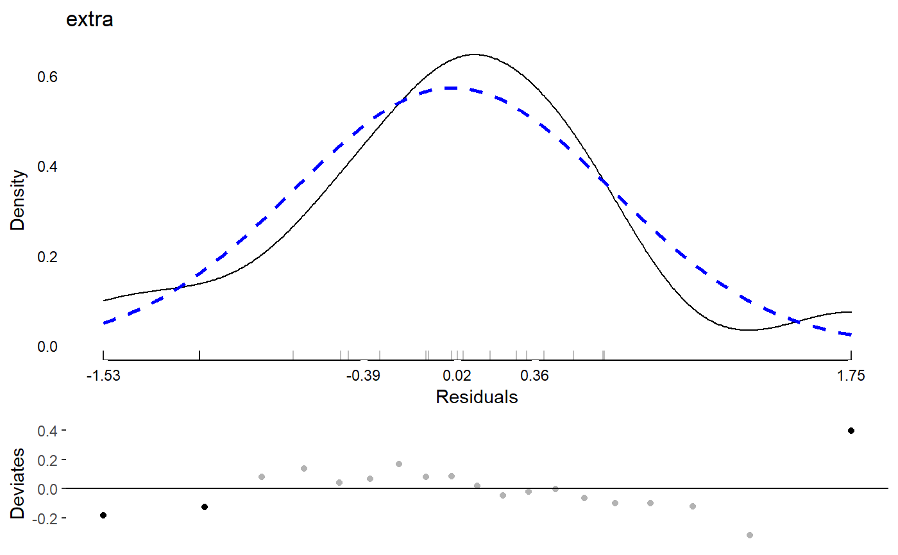
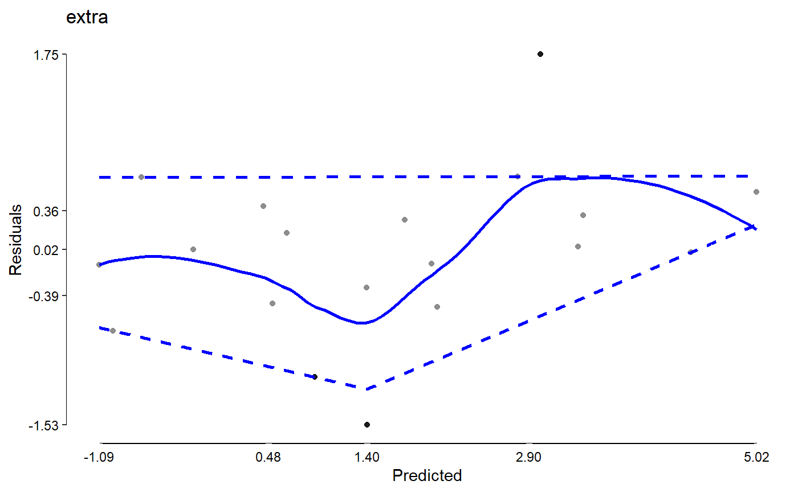
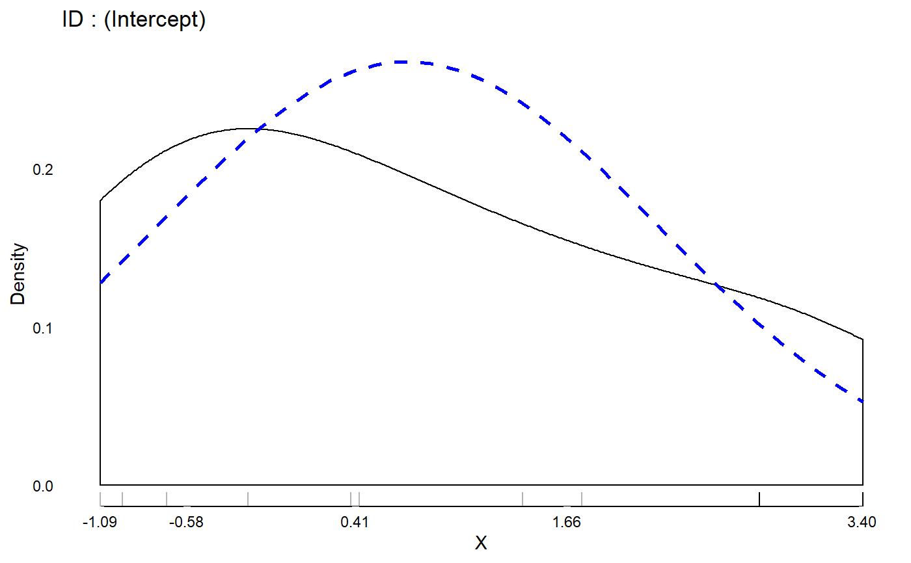

This function creates a number of diagnostics
for merMod models.
# S3 method for merMod modelDiagnostics( object, ev.perc = 0.001, robust = FALSE, distr = "normal", standardized = TRUE, ... )
| object | A fitted model object, either of class merMod from the lme4 package or merModLmerTest from the lmerTest package. |
|---|---|
| ev.perc | A real number between 0 and 1 indicating the proportion of the theoretical distribution beyond which values are considered extreme values (possible outliers). Defaults to .001. |
| robust | Whether to use robust mean and standard deviation estimates for normal distribution |
| distr | A character string given the assumed distribution.
Passed on to |
| standardized | A logical whether to use standardized residuals.
Defaults to |
| ... | Additional arguments, not currently used. |
A logical (is.modelDiagnostics) or
a modelDiagnostics object (list) for
as.modelDiagnostics and modelDiagnostics.
library(JWileymisc) sleep[1,1] <- NA m <- lme4::lmer(extra ~ group + (1 | ID), data = sleep) md <- modelDiagnostics(m, ev.perc = .1) md$extremeValues#> extra ID Index EffectType #> 1: 0.0 9 9 Residuals #> 2: -0.1 5 15 Residuals #> 3: 4.6 9 19 Residuals #> 4: 3.4 6 6 Random Effect ID : (Intercept) #> 5: 3.7 7 7 Random Effect ID : (Intercept) #> 6: 4.4 6 16 Random Effect ID : (Intercept) #> 7: 5.5 7 17 Random Effect ID : (Intercept)class(md)#> [1] "modelDiagnostics.merMod" "modelDiagnostics"plot(md)#>data(aces_daily, package = "JWileymisc") m <- lme4::lmer(PosAff ~ STRESS + (1 + STRESS | UserID), data = aces_daily) md <- modelDiagnostics(m, ev.perc = .1) # gm1 <- lme4::glmer(cbind(incidence, size - incidence) ~ period + (1 | herd), # data = lme4::cbpp, family = binomial) # modelDiagnostics(gm1) ## should be an error rm(m, md, sleep)